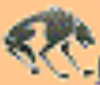

My dog sasha is my best friend , she likes to chass the soccer ball when i practice . It is so funny to see her running down the field trying to catch the ball whith her mouth. it just won't fit!
Once Sasha saved my life. When I was only 4 years old, I started to go into the street to get a ball that hod rolled across the street. Of course I did not think to look for cars! Sasha got in front of me and knocked me backwards onto the sidewalk. I was mod until I saw the car go by where I would have been. Then I was so happy that Sasha was smarter than I was!
 Los lobos ‟My team
Back to Heclagr page
01/05/02